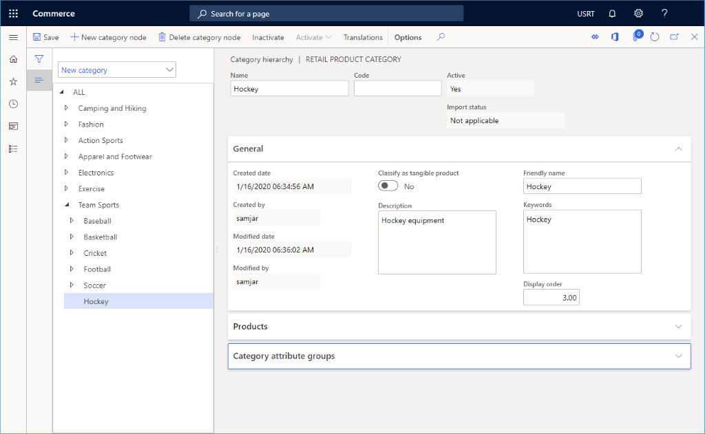

Eine Variantengruppe erstellen
Important
Dynamics 365 Retail ist jetzt Dynamics 365 Commerce und bietet umfassende Handelsfunktionen für alle Kanäle – von E-Commerce über Shops bis hin zu Callcentern. Weitere Informationen zu diesen Änderungen finden Sie unter Microsoft Dynamics 365 Commerce.
In diesem Thema wird beschrieben, wie Sie eine Größen-, Stil- oder Farbvariantengruppe für ein Produkt in Microsoft Dynamics 365 Commerceerstellen.
Übersicht
Dynamics 365 Commerce unterstützt mehrere Varianten für Produkte. Es ist ideal, Variantengruppen für verschiedene Produktkategorien einzurichten. Beispielsweise kann eine Größengruppe für T-Shirts mit besonders kleinen, mittleren, großen und besonders großen Größen erstellt werden, oder es kann eine Farbgruppe erstellt werden, die alle verfügbaren Farben eines Produkts enthält. Variantengruppen sollten hinzugefügt werden, bevor Produkte hinzugefügt werden.
In diesem Thema wird eine Größengruppe erstellt und konfiguriert. Ähnliche Verfahren können zum Hinzufügen und Konfigurieren von Stilgruppen und Farbgruppen verwendet werden.
Eine Größengruppe erstellen
Gehen Sie folgendermaßen vor, um eine Größengruppe zu erstellen.
- Gehen Sie im Navigationsbereich zu Module > Retail und Commerce > Produkte und Kategorien > Variantengruppen >. Größengruppen.
- Wählen Sie im Aktivitätsbereich Neu aus.
- Geben Sie im Feld Größengruppe einen Namen für die Größengruppe ein.
- Geben Sie im Feld Beschreibung eine entsprechende Beschreibung ein.
- Wählen Sie im Aktivitätsbereich Speichern aus.
Der Größengruppe Attribute hinzufügen
Um Attribute zu einer Größengruppe hinzuzufügen, führen Sie die folgenden Schritte aus.
- Gehen Sie im Navigationsbereich zu Module > Retail und Commerce > Produkte und Kategorien > Variantengruppen > Größengruppen.
- Wählen Sie im Navigationsbereich eine Größengruppe aus.
- Wählen Sie unter Größengruppenlinien die Option Hinzufügen.
- Geben Sie im Feld Größe eine Zeichenfolge für die Größe ein (zum Beispiel „XL”).
- Geben Sie in das Feld Größenbezeichnung einen Namen für die Größe ein (z. B. „Extra groß”).
- Geben Sie im Feld Auffüllungsgewicht eine Zahl ein, die das Auffüllungsgewicht darstellt.
- Geben Sie in das Feld Nummer in Strichcode eine Zahl ein, die den Strichcode darstellt.
- Geben Sie im Feld Anzeigereihenfolge eine Nummer ein, die die Anzeigereihenfolge darstellt.
- Wenn Sie mit dem Hinzufügen von Größen fertig sind, wählen Sie Speichern im Aktivitätsbereich.
Die folgende Abbildung zeigt ein Beispiel für die Größengruppe für „lässige Shirtgrößen”
